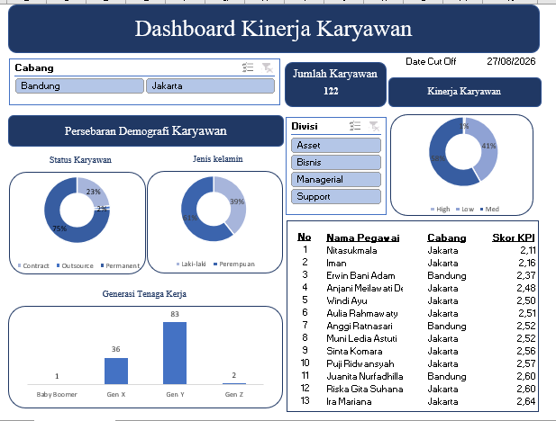
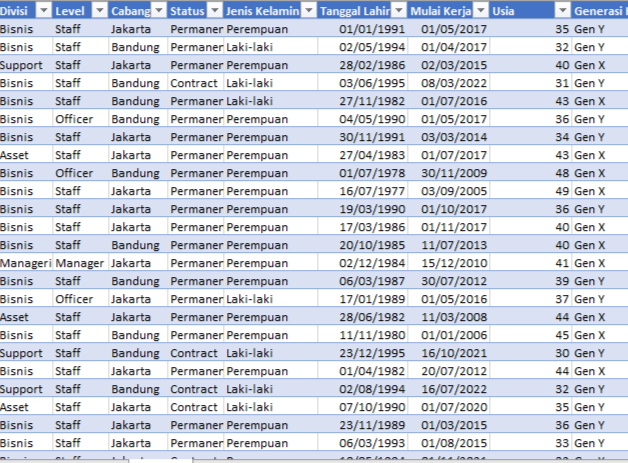
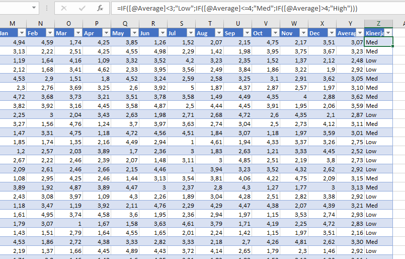

Data yang ditampilkan pada contoh di bawah bersifat fiktif untuk keperluan demonstrasi.
Mengolah data mentah 122 karyawan menjadi dashboard KPI bulanan yang siap dibaca manajemen — mulai dari pembersihan data, pembuatan kolom analisis baru dari kolom lain, hingga ringkasan visual interaktif.

Tampilan dashboard: grafik status karyawan, gender, generasi kerja, dan kategori kinerja.
Data Cleansing
Contoh tampilan kolom hasil formula pada data. Anda bisa menampilkan data lengkap karena bersifat fiktif.
Kolom Turunan & FormulaUsia otomatis dari Tanggal Lahir memakai DATEDIF(...,NOW(),"Y").Generasi Kerja (Gen Z / Gen Y / Gen X / Baby Boomer) dari kolom Usia menggunakan fungsi IF bertingkat (nested IF).Average skor KPI Jan–Des per karyawan dengan AVERAGE().Kinerja (Low / Med / High) dari nilai Average menggunakan nested IF dengan ambang batas tertentu.
Ringkasan jumlah karyawan per status, gender, generasi kerja, dan kategori kinerja.
Ringkasan & Visualisasi (Pivot Table)Status kepegawaian (Permanent, Contract, Outsource).Jenis Kelamin dan per Generasi Kerja.Kinerja (Low/Med/High).Nama Pegawai dan Cabang, diurutkan untuk menyoroti skor terendah sebagai perhatian utama.